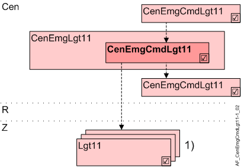

中央应急指挥照明 (CenEmgCmd11)
Overview
应用功能》Central emergency command for lighting 11" (CenEmgCmdLgt11) 使用多状态 BACnet 对象处理紧急操作。

岑 | 中央职能 |
CenEmgLgt11 | Central emergency lighting 11 |
CenEmgCmdLgt111) | Central emergency command for lighting 11 |
R | 房间 |
Z | 一个房间部分的照明区域 |
长链111) | Lighting 11、小组成员 |
1) | CenEmgCmdLgt11 要么作为组成员作用于 AFs Lgt11，要么作为组成员直接作用于照明区域（BACnet 对象）。 |
Function
这stagedCenEmgCmdLgt11 中的组成员的紧急操作通过 BACnet 使用多状态对象进行，并且可以接受以下值：Off/12.5%/25%/37.5%/50%/62.5%/75%/100%。该值是循环写入的（默认为 15 分钟）。
紧急操作员可以使用switch在这种情况下，还需要具有启用位置/off/on. AF CenEmgSwiLgt11 的（消防开关）。
AnEmergency detector自动打开群组成员的照明。在这种情况下，还需要 AF CenEmgSwDet11。手动操作可以覆盖自动切换。
Nested groups是可能的，例如建筑物的上级组和各个走廊的下级组。
Secure communication：小组经理和小组成员监督沟通。
如果群组管理员不在，照明就会打开。
即使 DALI 总线不可用，照明也会打开。
Configuration
 Parameter
Parameter
描述 | 范围 | 默认值 |
|---|---|---|
Emergency lighting level 1:Off | EmgLgtLvl | 8:On |
Cycle 1...60 [min] | Cycle | 15 [min] |
Interface
界面 | 描述 | 类型 | 参考号 | 所有者 |
|---|---|---|---|---|
CenEmgLgtCmdv | Central emergency lighting command value | MPrcVal | ● | - |
CenEmgLgtMst | Manager for central emergency lighting | GrpMaster | ◉ | CenEmgLgt11 |
Engineering and commissioning
- The AF is permitted for:
Normal lamps as well as EML-A, EML-B, EML-D-FL and EML-D-SWI. - The AF is not permitted for:
EML-C and EML-D.